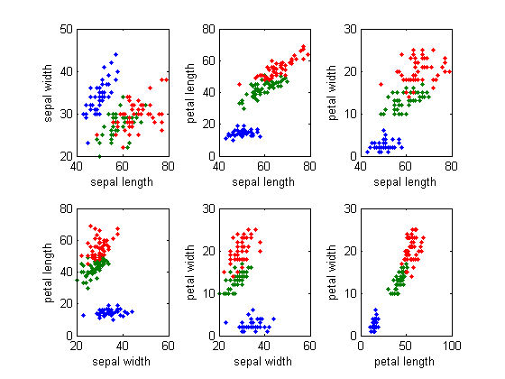

Fuzzy C-Means Clustering for Iris Data
This demo illustrates how to use Fuzzy C-Means clustering for Iris dataset.
Contents
Load Data
The dataset is obtained from the data file 'iris.dat'. This dataset was collected by botanist Anderson and contains random samples of flowers belonging to three species of iris flowers setosa , versicolor , and virginica. For each of the species, 50 observations for sepal length, sepal width, petal length, and petal width are recorded.
The dataset is partitioned into three groups named setosa , versicolor , and virginica. This is shown in the following code snippet.
load iris.dat setosa = iris((iris(:,5)==1),:); % data for setosa versicolor = iris((iris(:,5)==2),:); % data for versicolor virginica = iris((iris(:,5)==3),:); % data for virginica obsv_n = size(iris, 1); % total number of observations
Plot Data in 2-D
The data to be clustered is 4-dimensional data and represents sepal length, sepal width, petal length, and petal width. From each of the three groups(setosa, versicolor and virginica), two characteristics (for example, sepal length vs. sepal width) of the flowers are plotted in a 2-dimensional plot. This is done using the following code snippet.
Characteristics = {'sepal length','sepal width','petal length','petal width'};
pairs = [1 2; 1 3; 1 4; 2 3; 2 4; 3 4];
h = figure;
for j = 1:6,
x = pairs(j, 1);
y = pairs(j, 2);
subplot(2,3,j);
plot([setosa(:,x) versicolor(:,x) virginica(:,x)],...
[setosa(:,y) versicolor(:,y) virginica(:,y)], '.');
xlabel(Characteristics{x});
ylabel(Characteristics{y});
end
 Setup Parameters
Next, the parameters required for Fuzzy C-Means clustering such as number of clusters, exponent for the partition matrix, maximum number of iterations and minimum improvement are defined and set. This are shown in the following code snippet.
cluster_n = 3; % Number of clusters expo = 2.0; % Exponent for U max_iter = 100; % Max. iteration min_impro = 1e-6; % Min. improvement
Compute Clusters
Fuzzy C-Means clustering is an iterative process. First, the initial fuzzy partition matrix is generated and the initial fuzzy cluster centers are calculated. In each step of the iteration, the cluster centers and the membership grade point are updated and the objective function is minimized to find the best location for the clusters. The process stops when the maximum number of iterations is reached, or when the objective function improvement between two consecutive iterations is less than the minimum amount of improvement specified. This is shown in the following code snippet.
% initialize fuzzy partition U = initfcm(cluster_n, obsv_n); % plot the data if the figure window is closed if ishghandle(h) figure(h); else for j = 1:6, x = pairs(j, 1); y = pairs(j, 2); subplot(2,3,j); plot([setosa(:,x) versicolor(:,x) virginica(:,x)],... [setosa(:,y) versicolor(:,y) virginica(:,y)], '.'); xlabel(Characteristics{x}); ylabel(Characteristics{y}); end end % iteration for i = 1:max_iter, [U, center, obj] = stepfcm(iris, U, cluster_n, expo); fprintf('Iteration count = %d, obj. fcn = %f\n', i, obj); % refresh centers if i>1 && (abs(obj - lastobj) < min_impro) for j = 1:6, subplot(2,3,j); for k = 1:cluster_n, text(center(k, pairs(j,1)), center(k,pairs(j,2)), int2str(k), 'FontWeight', 'bold'); end end break; elseif i==1 for j = 1:6, subplot(2,3,j); for k = 1:cluster_n, text(center(k, pairs(j,1)), center(k,pairs(j,2)), int2str(k), 'color', [0.5 0.5 0.5]); end end end lastobj = obj; end
Iteration count = 1, obj. fcn = 28971.732229 Iteration count = 2, obj. fcn = 21428.913712 Iteration count = 3, obj. fcn = 15907.394597 Iteration count = 4, obj. fcn = 9263.010879 Iteration count = 5, obj. fcn = 7062.630646 Iteration count = 6, obj. fcn = 6475.211882 Iteration count = 7, obj. fcn = 6249.471562 Iteration count = 8, obj. fcn = 6146.023339 Iteration count = 9, obj. fcn = 6097.858175 Iteration count = 10, obj. fcn = 6075.873149 Iteration count = 11, obj. fcn = 6066.095010 Iteration count = 12, obj. fcn = 6061.840414 Iteration count = 13, obj. fcn = 6060.018628 Iteration count = 14, obj. fcn = 6059.247071 Iteration count = 15, obj. fcn = 6058.922679 Iteration count = 16, obj. fcn = 6058.786940 Iteration count = 17, obj. fcn = 6058.730317 Iteration count = 18, obj. fcn = 6058.706745 Iteration count = 19, obj. fcn = 6058.696944 Iteration count = 20, obj. fcn = 6058.692872 Iteration count = 21, obj. fcn = 6058.691181 Iteration count = 22, obj. fcn = 6058.690480 Iteration count = 23, obj. fcn = 6058.690189 Iteration count = 24, obj. fcn = 6058.690068 Iteration count = 25, obj. fcn = 6058.690018 Iteration count = 26, obj. fcn = 6058.689997 Iteration count = 27, obj. fcn = 6058.689988 Iteration count = 28, obj. fcn = 6058.689985 Iteration count = 29, obj. fcn = 6058.689983 Iteration count = 30, obj. fcn = 6058.689983
The figure shows the initial and final fuzzy cluster centers. The bold numbers represent the final fuzzy cluster centers obtained by updating them iteratively.